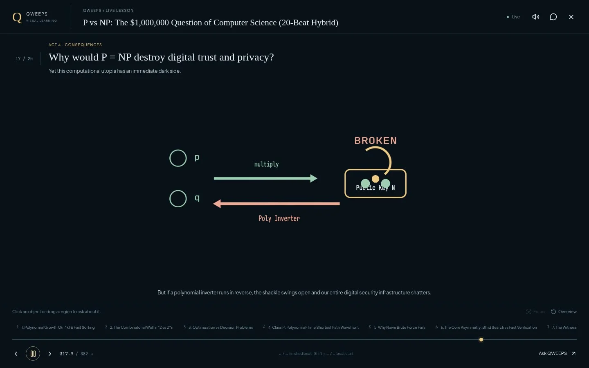
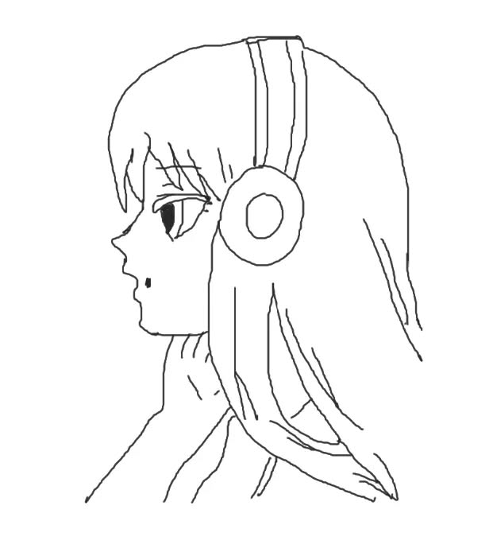
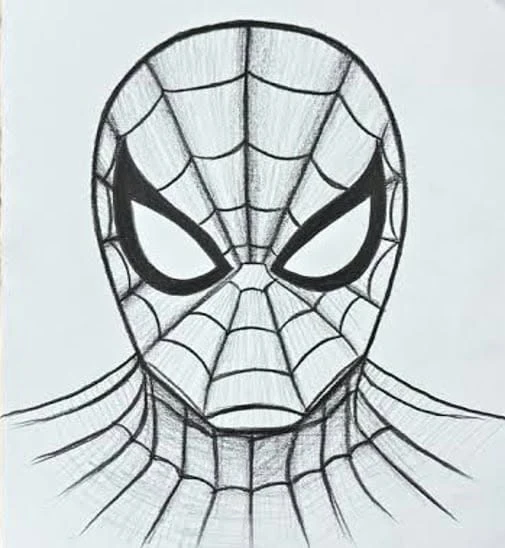

Quest log / four save files
QUESTLOG
Four players, four portfolios.

FEATURED QUESTQWEEPS
Live interactive visual teaching
A research prototype that turns a question or a source document into a live visual lesson with synchronized narration, inspectable scenes, and contextual branches.



05 ARTWORKSARTWORKS
Digital · Illustration · Line Art · Doodles
Five original artworks by Jester Marc Merino — spanning expressive botanical studies, stylized cartoon and anime character drawings, and playful doodles.
 11 PLATES / GALLERY
11 PLATES / GALLERY
GRAPHITE STUDIES
Academic traditional drawing & tonal craft
Eleven observational graphite drawings exploring value gradation, drapery, anatomy, and literary portraiture—grounded in traditional craft.


 03 ARTWORKS
03 ARTWORKS
ARTWORKS
Traditional illustration / Elijah Art Bantinan
Three hand-drawn Spider-Man studies by Elijah Art Bantinan — pairing a cross-hatched ink skyline piece, a shaded graphite portrait, and a bold red-and-black marker drawing sketched right over notebook study pages.
Save file / complete
ALL FOUR SLOTS
ARE LIVE.
Every player in PARALLAX has checked in a save file — spanning interactive systems, digital illustration, academic graphite studies, and traditional ink & marker work.
Full party online
SEND A SIGNAL.
All four quests are complete. Reach out to the studio for critiques, collaborations, or presentation details.